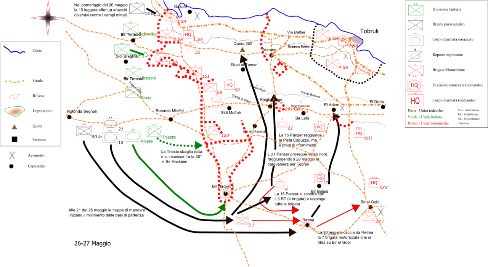

Batalla de Gazala
La victoria más brillante de Rommel en el desierto: una audaz maniobra envolvente que derrotó al Octavo Ejército británico y le abrió las puertas de Tobruk y de Egipto.
Datos
| Fechas | 26 de mayo – 21 de junio de 1942 |
|---|---|
| Lugar | Línea de Gazala, cerca de Tobruk (Libia) |
| Resultado | Victoria del Eje; caída de Tobruk y retirada británica a Egipto |
| Bando del Eje | Alemania e Italia (Ejército Panzer de África) |
| Bando aliado | Reino Unido, la Commonwealth y la Francia Libre |
| Comandantes | Erwin Rommel (Eje); Neil Ritchie, Claude Auchinleck (Reino Unido) |
| Consecuencia directa | Rommel es ascendido a mariscal de campo y avanza hacia El Alamein |
Bando del Eje
Afrika Korps
Bando aliado
Octavo Ejército
Bir Hakeim
Introducción
En la primavera de 1942, británicos y alemanes se enfrentaban a lo largo de la línea de Gazala, una serie de posiciones fortificadas ("cajas") protegidas por enormes campos de minas al oeste de Tobruk. El 26 de mayo, Rommel lanzó su ataque con una maniobra tan arriesgada como brillante que le daría una de sus mayores victorias.
Razones
- Tomar Tobruk: Rommel necesitaba por fin el puerto que se le había resistido en 1941 para poder avanzar sobre Egipto.
- Adelantarse a los aliados: ambos bandos preparaban una ofensiva; Rommel golpeó primero.
- Destruir el Octavo Ejército: derrotar a los blindados británicos en campo abierto antes de que recibieran más refuerzos y los nuevos tanques estadounidenses.
Cuerpo (desarrollo)
En lugar de atacar de frente los campos de minas, Rommel rodeó por el sur todo el extremo de la línea de Gazala con sus divisiones blindadas. La maniobra chocó con la tenaz resistencia de la brigada de la Francia Libre en Bir Hakeim, que aguantó dos semanas y estuvo a punto de arruinar el plan alemán al cortar sus suministros.
Atrapado temporalmente entre los campos de minas y las posiciones británicas en una zona que se conoció como "el Caldero" (the Cauldron), Rommel resistió, se reabasteció abriendo un pasillo por las minas y luego destrozó los contraataques británicos, mal coordinados. El Octavo Ejército se desmoronó y se retiró. El 21 de junio, Tobruk cayó en un solo día, con la captura de unos 35.000 prisioneros: un desastre para los Aliados.

Mapa estratégico de la batalla de Gazala (Wikimedia Commons): el envolvimiento de Rommel por el sur, alrededor de Bir Hakeim. Leyenda original en italiano.
Conclusión
Gazala fue la obra maestra táctica de Rommel y le valió el bastón de mariscal de campo. La caída de Tobruk conmocionó al Reino Unido —Churchill recibió la noticia estando con Roosevelt en Washington— y abrió a Rommel el camino hacia el interior de Egipto.
- Rommel persiguió al Octavo Ejército hasta las proximidades de Alejandría, deteniéndose ante una pequeña estación llamada El Alamein.
- La derrota provocó una crisis de mando y de moral en el bando aliado.
- La heroica defensa de Bir Hakeim dio prestigio internacional a la Francia Libre de De Gaulle.
Curiosidades
- Bir Hakeim: la resistencia de los franceses libres del general Koenig fue tan tenaz que el propio Hitler la elogió; retrasó a Rommel días cruciales.
- "El Caldero": el nombre con que se conoció la bolsa donde Rommel quedó momentáneamente cercado y de la que logró salir con audacia.
- El ascenso de Rommel: con 50 años, se convirtió en el mariscal de campo más joven del ejército alemán.
Teorías
Debates e interpretaciones historiográficas, presentados como tales:
- ¿Victoria genial o error británico? Se debate cuánto se debió Gazala al genio de Rommel y cuánto a la descoordinación del mando británico, que lanzó sus blindados en ataques fragmentarios.
- La sobreextensión: muchos historiadores sostienen que, tras Gazala, Rommel se dejó arrastrar por el éxito y avanzó hacia El Alamein con sus fuerzas exhaustas y sin suministros, sembrando su posterior derrota.